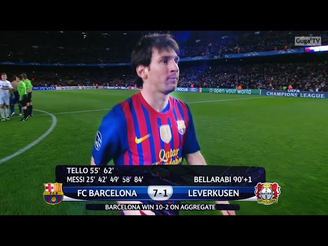

Messi historisk femmålsskytt - när Barcelona vann med 7-1
Barcelona krossade Leverkusen fullständigt och vann med 7-1. Leo Messi blev historisk som förste spelare att göra fem mål i en och samma match i Champions League. Lionel Messi blev efter 26 minuter frispelad och gjorde inget misstag då han på sitt sedvanliga vis elegant chippade bollen i mål. Anmärkningsvärt är att bollen gick in vid sidan av Leno, och inte över. Målvakten verkade uppgiven vid avslutet och kunde till synes inget göra. Efter 42 minuter vandrade Messi in i plan och placerade snyggt utanför straffområdet in 2-0 vid Lenos högra stolpe. Vackert av Messi som med målet kommit upp i nio till antalet i säsongens Champions League. Messis andra mål var det sista som skedde av värde i den första halvleken och lagen gick in till omklädningsrummen vid ställningen 2-0. Fabregas stod för djupledsbollen och Messi höll undan sin försvarare och chippade, snyggare än vid 1-0-målet, in sitt hattrick. Denna gång visade Messi att högerfoten höll klass. Messis tionde mål på sju matcher i säsongens Champions League. Inbytte Cristian Tello byttes in och behövde inte många minuter på sig att göra sitt första Champions League-mål. 55 minuter hade gått då han blev friställd och enkelt kunde placera bollen lågt i Lenos vänstra hörn. Överkörning var ordet. Bara minuten senare kunde Lionel Messi göra sitt fjärde mål i matchen och det elfte i denna Champions League-säsong sammanlagt. 5-0! Det var inte slut där, utan några minuter senare stod det 6-0 efter Tellos andra mål i matchen. Leno stod denna gång för ett svagt målvaktsagerande. Förödmjukningen blev än värre för Leverkusen - och showen än större för Messi, när argentinaren placerade in sitt femte (!) mål för kvällen bakom en chanslös Leno. Med sina fem mål i kvällens match blev Lionel Messi historisk. Ingen spelare har någonsin tidigare gjort fem mål i en och samma Champions League-match. Leverkusen lyckades ändå få in ett tröstmål då Bellarabi snyggt knorrade in 7-1 för tyskarna. Kort därefter blåstes matchen av och Barcelona och Lionel Messi hade fullständigt pulvriserat Leverkusen. Hatten av.